\Website handoff · v9 · 17 October 2026
This package holds all 40 pages of the new tribera.ai, built on the homepage’s design system. The homepage is index.html. Click any card to open the page, then read the rules below before designing anything new.
01 · Pages
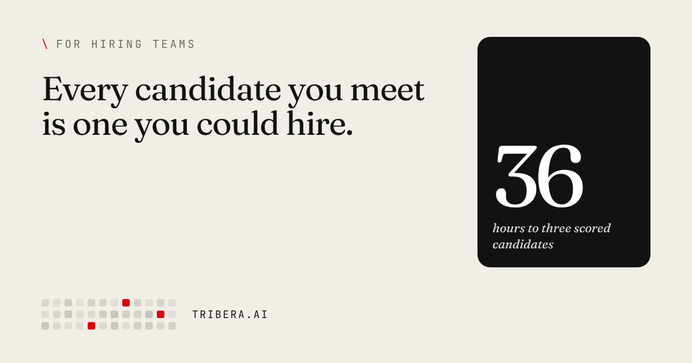
The 126 → 2 case study: click through the funnel and the squares fall away to the two hires. Also the scorer in the hero and the 36-hour clock.
Opens on: A quote (what a backend interviewer listens for) and the 126 → 2 numeral
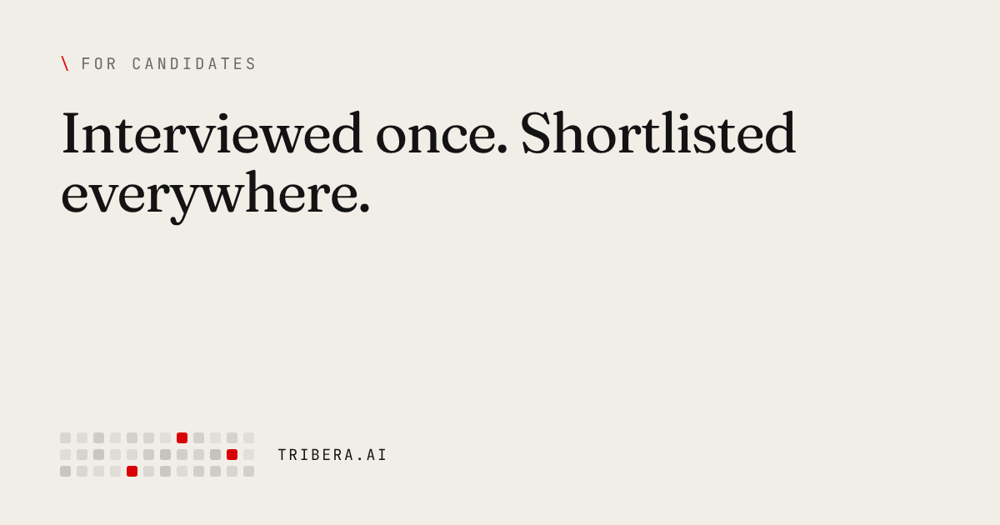
The CV you can click into, and the privacy switches.
Opens on: Eyebrow + headline
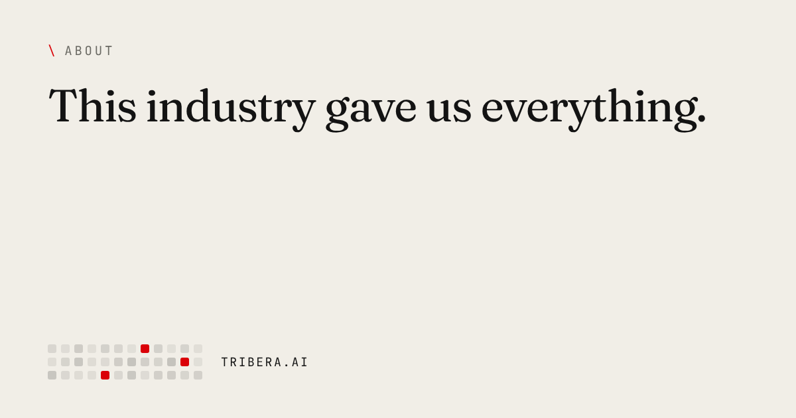
Founder portraits start grey and take their red ground in view. The transcript debate: the reader picks a side and the "For now" stamp lands.
Opens on: Quote: “There’s a yes for every person. It’s often somewhere else.”
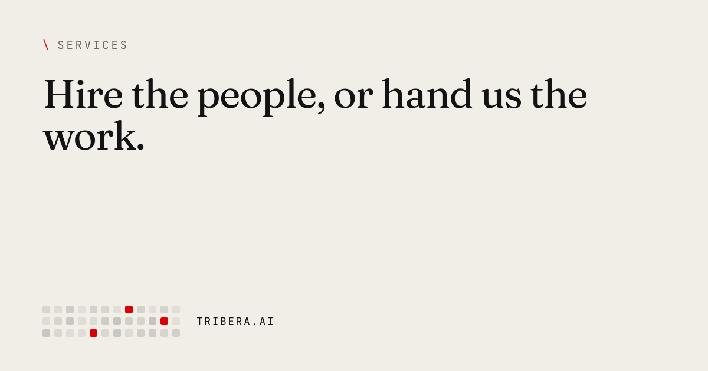
Four front doors as numbered tickets with perforations; the "what’s wrong" picker.
Opens on: The story opens on “22” (days)
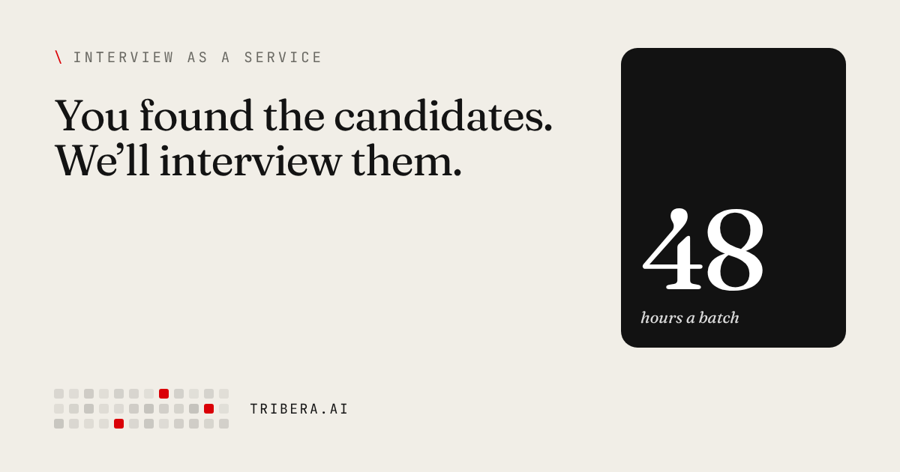
The batch card: you send, we return, 48 hours.
Opens on: Eyebrow + headline
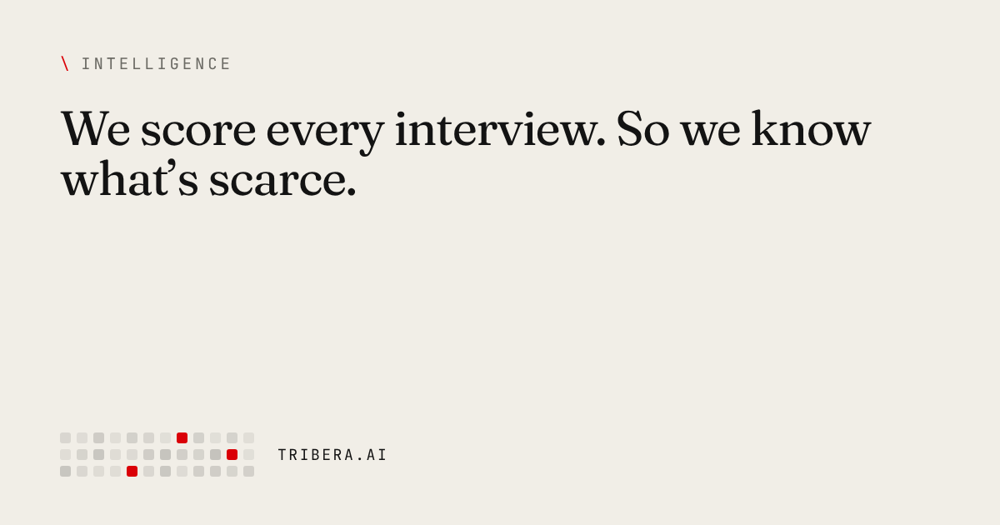
Sourced market findings (Ashby, Bain, ISC2, Nasscom, KPMG, Zinnov) and the scarcity lab.
Opens on: Eyebrow + headline
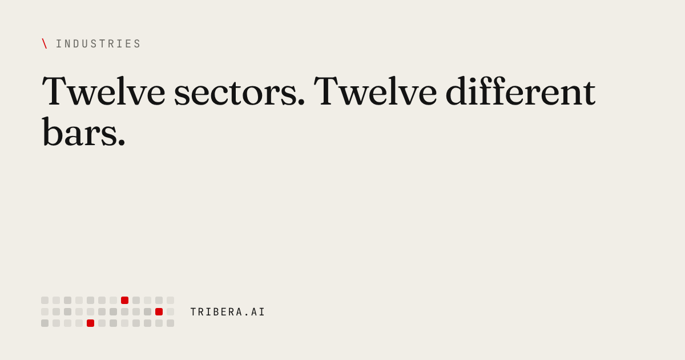
Twelve sector lines drawn over the six skills. Hover or tap one to pick it out.
Opens on: Eyebrow + headline
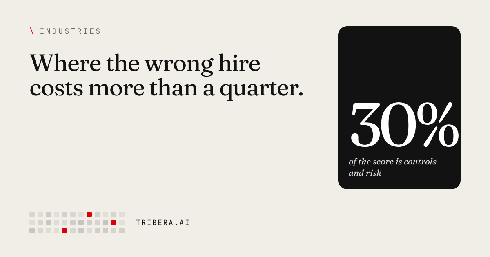
The weight card, plus one sourced market figure per sector.
Opens on: The sector’s top skill weight, as a big numeral
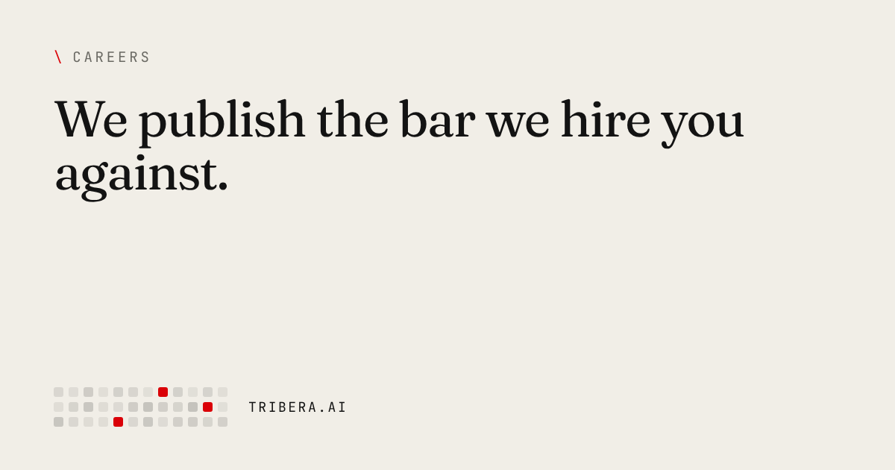
“Score yourself first”: a paper scorecard applicants mark in ink, out of 50 against our bar of 34.
Opens on: The Indiranagar scene
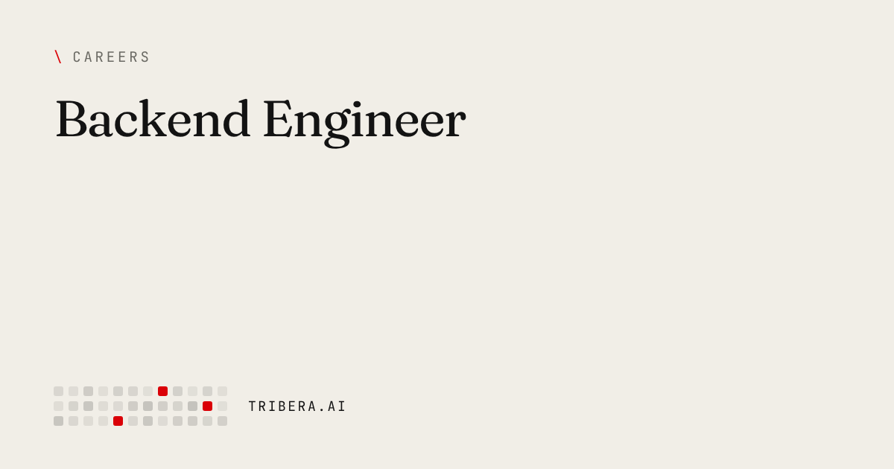
Template for every role.
Opens on: Eyebrow + headline
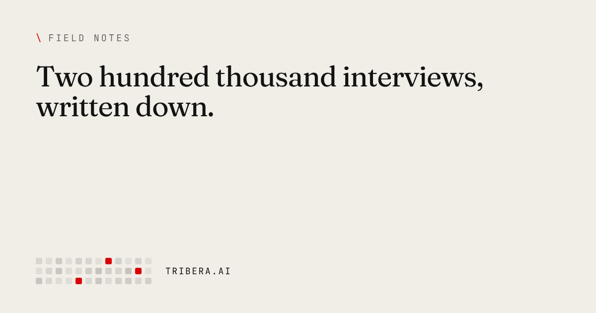
Magazine layout: a lead story, two features and a list, with numeral covers.
Opens on: Eyebrow + headline
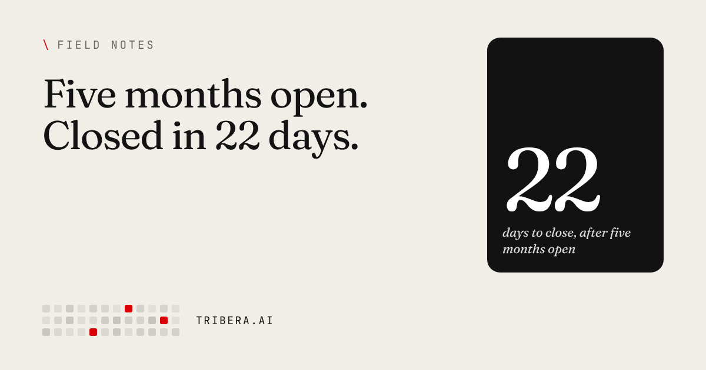
Numeral cover, drop cap, margin notes, wide pull quote, author photo, numbered sources. Three new posts go live on 9 June, 27 August and 19 October 2026; the 19 October piece leads the index.
Opens on: The cover numeral
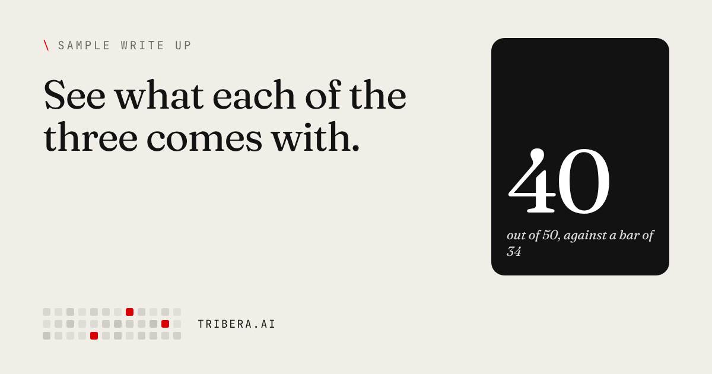
Page one of a sample candidate write-up as a preview, and a short form (name, work email, company) that emails the full two-page PDF. Linked from the homepage shortlist, Services and Interview as a service.
Opens on: Eyebrow + headline
Privacy, terms, security and data processing (privacy.html, terms.html, security.html, dpa.html). Plain-language legal pages: a short-version card, a sticky contents list, numbered sections. Rebuilt from the live pages with every clause kept.
Opens on: Eyebrow + headline
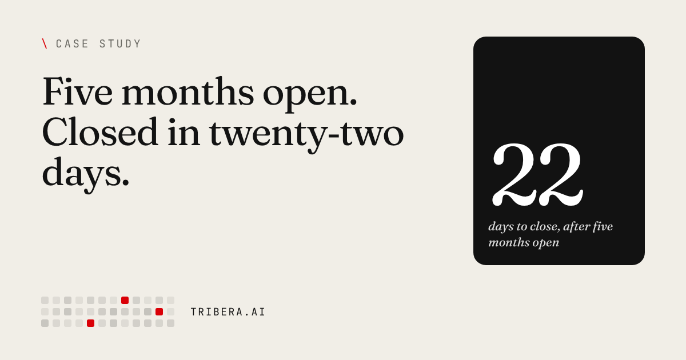
The 22-day search: two timelines on the same scale (five months before, 22 days after), the 327 profiles with the eleven passed over and the one hired, and the two intake questions.
Opens on: Eyebrow + headline
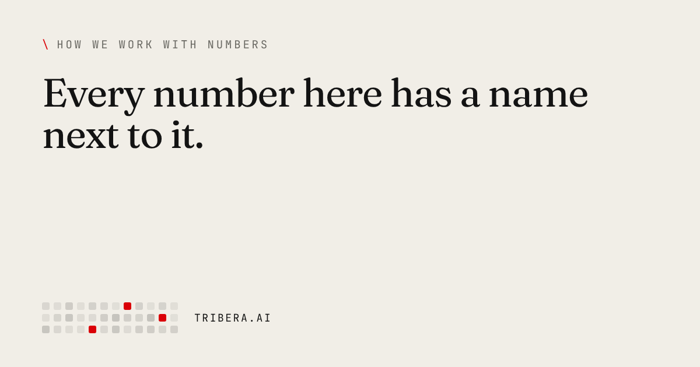
An annotated example of how a figure is set out, then eight rules for every number on the site, signed by Akshata. Every sources list links here.
Opens on: Eyebrow + headline
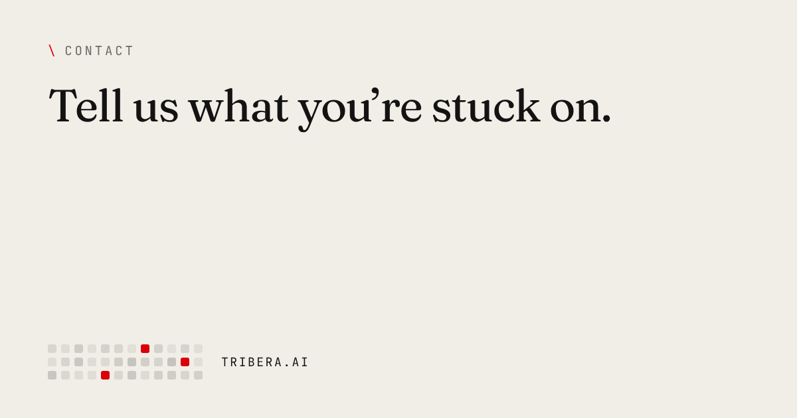
The form reads as a note: “Hi Tribera, I’m ___, and I’m hiring a ___ at ___…”. The people who reply are shown.
Opens on: Eyebrow + headline
02 · Design rules
#131313, paper #F1EEE7, white, and red #DA0007. Charcoal means cleared. Red appears only where a person judged or someone belongs. No green, no amber.g-white, g-paper, g-dark)..ql) or serif italic (.ql--i). Small mono capitals are kept for data..op-q) or a giant numeral (.op-n), one numeral per page at most. That one is the page’s signature moment.brand/: black on light grounds, white on dark, red only where the brand itself is the subject. The header and footer use them at 22px and 28px tall. Never retype the wordmark in a font.office/ is from IndiQube TownHub, a managed shared office. IndiQube’s own signs stay, other tenants’ and advertisers’ names are blurred, and Tribera appears only where it really would: on the building directory. The Pune photo of Zenith Complex is unedited apart from blurred number plates, with a Tribera label pointing to the building. It appears only on the contact page.shell.Notes(), .ref(source, url), .section() or .end().text-wrap: pretty so no word is stranded on the last line, and headlines are balanced. Openers that start with a quote mark take the class hq, so the mark hangs outside the text edge. Scores, tables and counts use tabular figures so digits line up. Fraunces is loaded with its optical-size axis, so large headlines draw tighter. Dashes are true en dashes in ranges (2024–25).03 · Motion
The cards on this page use the same motion. Hover one to see it. All of it lives in the MICRO block at the end of each stylesheet.
cubic-bezier(.25,.1,.25,1), one curve for everything. Nothing bounces, overshoots or glows.--d).data/testimonials.json: add a quote there and it appears. Home shows every quote, and candidates shows the candidate ones.prefers-reduced-motion on, everything appears in place and nothing moves.04 · What’s in the folder
index.htmlThe homepage (v186)
*.html, industries/, careers/, blog/Every other page, self-contained with inline CSS and JS
og/A 1200×630 share image for every page
team/Founder portraits, 720px and 112px
office/Office photos: Bengaluru (IndiQube TownHub) and Pune (Zenith Complex, labelled)
brand/The Tribera logo in black, white and red, plus logo.png at the root
data/sectors.json, careers.json and testimonials.json, ready to become content collections
sitemap.xml, robots.txtReady to serve as they are
404.htmlThe not-found page, kept out of the sitemap and search
apple-touch-icon.pngThe phone home-screen icon
_headers, _redirectsCloudflare rules: security headers, caching, and redirects from the old URLs
docs/Not for deploying. DEPLOY.md and QA-REPORT.md for engineers, routes.csv, the scorecard, and email-assets/ with the full sample PDF the form sends
README.mdPorting to Astro, forms, SEO, for developers
05 · Before launch
DATA object in the page script, then set DATA.sample = false.